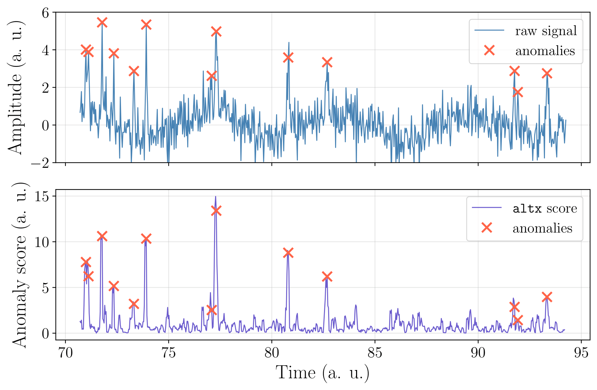
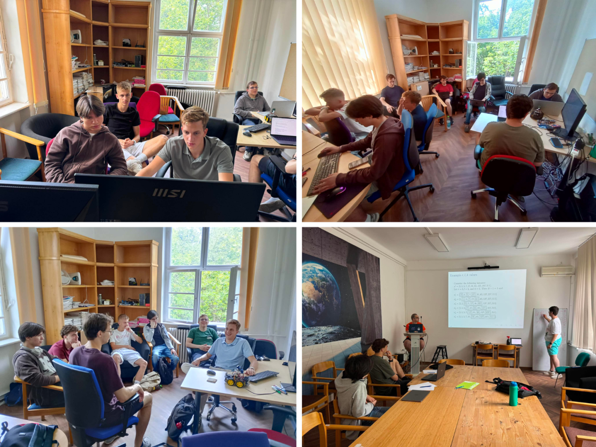
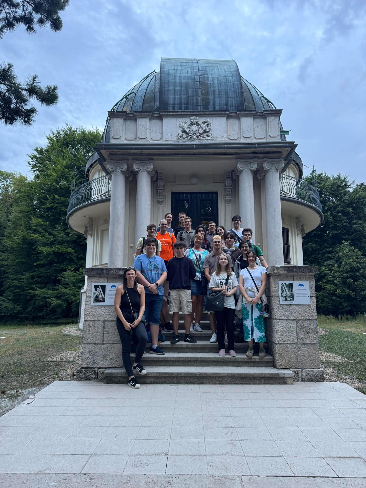

Wigner Summer Camp 2026
Between 6-10 July 2026, the HUN-REN Winger Research Center for Physics organiser their 7th annual summer camp for high school students with the aim of letting 10th-12th graders become researchers for a week by joining a research group in a Physics-related field. My personal responsibilities were associated with mentoring two motivated students in their project Anomaly Detection with ALTx.
Before the camp, our research group prepared several presentations and teaching materials covering the mathematical and programming foundations of the project, including basics of linear algebra, time series analysis, Python programming, and the use of Python libraries—pandas, NumPy, matplotlib and pytorch . ALT and ALTx was also introduced—a method developed by the research group for time series classification (TSC) and it's Python package.
As a mentor, I presented some of these topics along my colleagues and then guided the students with their own work, both with and without my colleagues. Our main focus was to specifically peak detection on artifical datasets. For this we used the Python package artifical-dataset(available on GitHub), (developed by the research group prior the camp) alongside Jupyter notebooks for the actual coding. Our research's focus was whether a classical Bayesian Hyperparameter Optimization works better on the original data, or on the ALTx-transformed data (ALT transfers the normal data points close to 0 and anomalious data close to 1 on a normalized scale, meaning it basically highlights the peaks).

ALTx-transformed data.Source: WignerCamp2026, Github.
The students' results were presented at a closing seminar at the end of the camp.


Our training materials used in the camp are available on GitHub.
ALT refers to the data transformation method introduced in a recently published article, "Adaptive law-based feature representation for time series classification" (Scientific Reports, 2025).
ALTx refers to the Python package implementation of ALT, introduced in a recently published article, "altx: a python package for adaptive law-based transformation in time series classification" (Machine Learning: Science and Technology, 2026).
Participants: Antal Jakovác, PhD1 (PI); Éva Mária Oláh, PhD1, 2 (PM); Hajnalka Ollé, PhD1 (PM); Balázs Paszkál Halmos1, 3, 4 (Co-I); Balázs Hajós, BSc1, 5 (Co-I); Vince Áron Molnár, BSc.1, 3 (Co-I); Levente László Pocsay1, 6 (Co-I); Bence Hajbel1, 7 (Co-I).
- HUN-REN Wigner Research Centre for Physics, Data and Compute Intensive Sciences Research Group (Budapest, Hungary)
- HUN-REN Wigner Research Centre for Physics, Institute for Particle- and Nuclear Physics (Budapest, Hungary)
- Tampere University, Faculty of Engineering and Natural Sciences (Tampere, Finland)
- CERN SY-RF-BR, (Genf, Switzerland)
- Eötvös Lóránd University, Faculty of Science (Budapest, Hungary)
- University of Applied Sciences Upper Austria, Faculty of Informatics, Communications and Media (Hagenberg, Austria)
- Petőfi Sándor Roman Catholic Primary School and High School (Vecsés, Hungary)